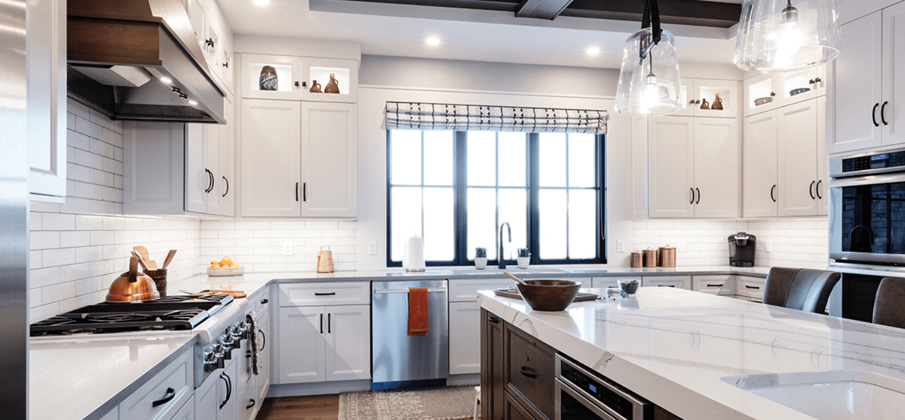
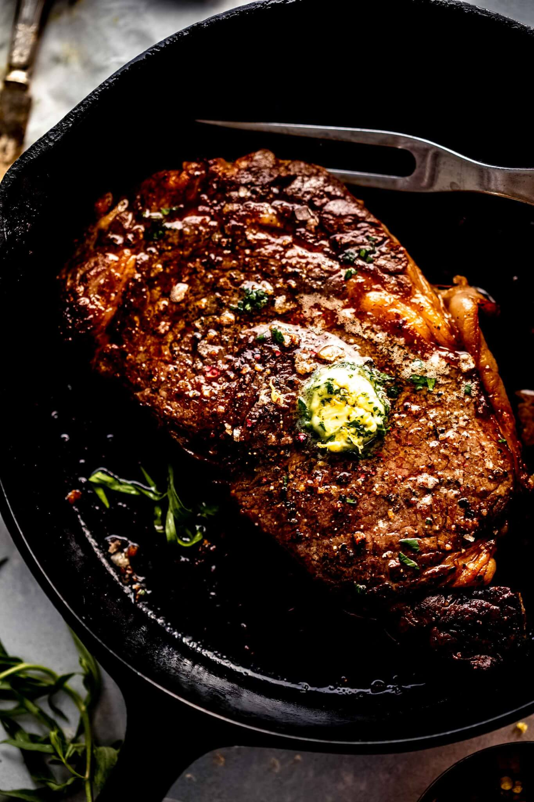

Awesome steak
Description
This is a very delicious steak,and it's also quite easy to make it.Give it a try!

Ingredients
one teaspoon butter
a slice of beef
pepper
Directions
Making this food is easy!
Put the butter in the pan and heat it,until it's melted.The put the beff in the pan and cook it for five minute. Put some pepper and turn the beef to the other side. Last it for another 5 minute and it's ready.
Print Recipe
More recipes
Super burger
Cuppercake
a